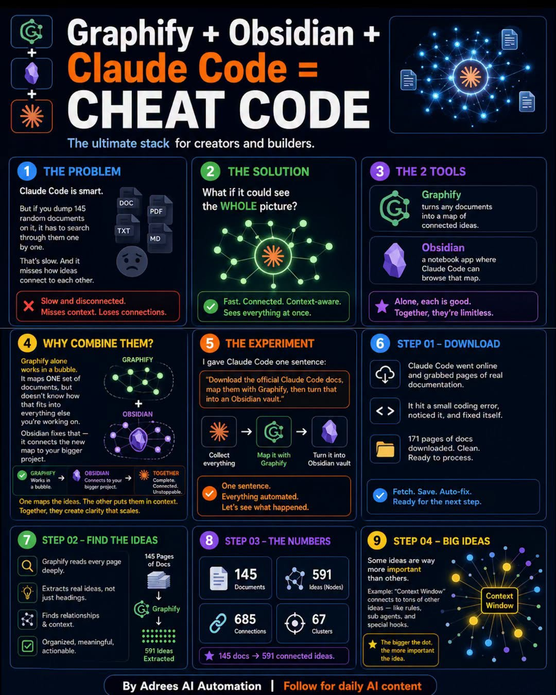

Adrees AI Automation｜Graphify + Obsidian + Claude Code 知識圖譜工作流查核
來源是 Adrees AI Automation 的 Facebook 貼文。貼文主張：把 Claude Code、Graphify、Obsidian 組合起來，可以讓 AI Agent 更理解你的 business，不只是逐一搜尋 145 份隨機文件，而是把它們變成 Claude Code 能瀏覽與理解的 591 個 connected ideas。

一句話摘要
這則貼文值得保存，因為它抓到 Claude Code 長上下文工作的核心痛點：文件不是越多越好，重點是把文件轉成可導航、可查詢、可維護的知識結構；但圖中的 145 documents、591 ideas、685 connections、67 clusters 屬於作者示範案例，不應直接外推為任何專案都能得到相同效果或 token 節省。
Facebook 公開頁可見內容
- 分享網址：`https://www.facebook.com/share/p/19LLn19HY3/`
- 解析後 canonical：`https://www.facebook.com/adreesAI/posts/pfbid0GWH5Nov2DaV9sofm2fcPBthHSSi727PcxsLperegMPtCWg3eFk4quvabqqQY7XkWl`
- 作者：Adrees AI Automation（已驗證帳號）。
- 公開可見互動：擷取時約 234 個心情、452 則留言、109 次分享。
- 貼文文案：`Claude + Graphify + Obsidian = an AI Agent that actually knows your business...`
- CTA：留言 `Graphify` 取得 complete breakdown；公開頁未直接提供完整 breakdown 連結。
圖卡 OCR 重點
圖卡標題：`Graphify + Obsidian + Claude Code = CHEAT CODE`，副標：`The ultimate stack for creators and builders.`
1. The Problem
圖卡指出：Claude Code 很聰明，但如果把 145 份 random documents 丟給它，它只能一份一份搜尋，速度慢，且會錯過 ideas 之間的連結。
- 支援檔案圖示：DOC、PDF、TXT、MD。
- 結論框：`Slow and disconnected. Misses context. Loses connections.`
2. The Solution
解法是讓 Claude Code 看見 whole picture，而不是逐一查找。
- 結論框：`Fast. Connected. Context-aware. Sees everything at once.`
3. The 2 Tools
- Graphify：`turns any documents into a map of connected ideas.`
- Obsidian：`a notebook app where Claude Code can browse that map.`
- 圖卡總結：`Alone, each is good. Together, they're limitless.`
4. Why Combine Them?
圖卡說法：Graphify alone works in a bubble，只會 map 一組 documents；Obsidian 把 new map 連到更大的 project context。
- Graphify：works in a bubble。
- Obsidian：connects to your bigger project。
- Together：complete, connected, unstopped。
- 圖卡金句：`One maps the ideas. The other puts them in context. Together, they create clarity that scales.`
5. The Experiment
作者給 Claude Code 一句話：
`Download the official Claude Code docs, map them with Graphify, then turn that into an Obsidian vault.`
流程圖：Collect everything → Map it with Graphify → Turn it into Obsidian vault。
6. Step 01 — Download
- Claude Code went online and grabbed pages of real documentation.
- It hit a small coding error, noticed it, and fixed itself.
- 171 pages of docs downloaded. Clean. Ready to process.
- 結論：`Fetch. Save. Auto-fix. Ready for the next step.`
7. Step 02 — Find the Ideas
- Graphify reads every page deeply.
- Extracts real ideas, not just headings.
- Finds relationships & context.
- Organized, meaningful, actionable.
- 圖中流程：145 pages of docs → Graphify → 591 ideas extracted。
8. Step 03 — The Numbers
圖卡列出：
- 145 Documents
- 591 Ideas / Nodes
- 685 Connections
- 67 Clusters
並總結：`145 docs → 591 connected ideas.`
9. Step 04 — Big Ideas
圖卡指出有些 ideas 比其他更重要，例子是 `Context Window` 連到 sub agents、special hooks 等其他 ideas。
- 圖卡說法：`The bigger the dot, the more important the idea.`
交叉查核
Graphify：可找到公開專案與工具頁，但需區分 Graphify 版本
Brave 搜尋可找到 `Graphify-Labs/graphify` GitHub repo，README 描述為 Claude Code skill：輸入 `/graphify` 後讀取 files、建立 knowledge graph，輸出 interactive graph、Obsidian vault、wiki 與 graph report。Repo description 也說它可把 codebase、docs、SQL schemas、configs、PDFs 轉成 queryable knowledge graph。
也可找到 `graphify.com` 與 `graphify.net` 等 Graphify 相關工具頁，皆主打把 code / docs / notes 轉成 AI coding assistants 可使用的知識圖譜。由於社群內容可能混用不同 Graphify 頁面或版本，本文採保守寫法：確認「Graphify 作為知識圖譜工具／skill 的方向可驗證」，但不保證貼文圖中使用的是哪個部署版本或商業服務。
Claude Code：官方定位支援「讀取 codebase、編輯檔案、執行命令、整合工具」
Claude Code 官方 docs 說明，它是 agentic coding tool，可讀取 codebase、編輯檔案、執行命令並整合開發工具。官方也提供 `llms.txt` 作為完整文件索引，這支持「Claude Code 可以抓取與整理官方文件」的可行方向。
不過，本文沒有實際重跑作者的實驗；因此 171 pages downloaded、145 documents、591 nodes、685 connections、67 clusters 應視為作者示範案例，而非官方 benchmark。
Obsidian：官方支援 linked notes 與 graph view
Obsidian 官方網站定位為 Markdown-based knowledge base；官方 help 中也有 Graph view，用於視覺化 vault 中 notes 的連結。這與貼文中「把 Graphify output 變成 Obsidian vault，讓 Claude Code 能 browse that map」的方向相符。
但 Obsidian 本身不是自動 agent；它是承載 Markdown notes、links、graph 的知識庫容器。真正讓 Claude Code 使用這些內容，仍需要檔案路徑、CLAUDE.md 指引、plugin、MCP 或人工導引方式。
欒帥可用的判讀方式
這則貼文的價值不是「Graphify + Obsidian = 無限上下文」這個行銷句，而是提供一個可落地的知識工程框架：
- Raw corpus：把 Claude Code docs、課程資料、工具文件、專案文件、SOP 放在可版本控管的資料夾。
- Graph layer：用 Graphify 類工具抽取 concepts、relationships、clusters，形成可查詢地圖。
- Vault layer：把輸出轉成 Obsidian vault / Markdown notes，方便人與 agent 共同瀏覽。
- Agent instruction layer：用 CLAUDE.md / Hermes skill / Obsidian note 明確告訴 agent 何時查 graph、如何引用來源、哪些是未驗證推論。
如果用在 AI 學習雷達，最適合的方向是把「AI 工具文章、Facebook/Threads 歸檔、官方文件、課程素材」轉成 topic graph，幫助快速回答：哪些工具互相相關？哪些主張已查核？哪些是高風險行銷敘事？
注意事項
- 本文沒有留言 `Graphify`，因此沒有取得作者承諾的 complete breakdown。
- Facebook 圖片已本地化保存，公開頁不熱連 Facebook CDN。
- 本文沒有實際安裝 Graphify、沒有重跑 Claude Code docs → Obsidian vault 流程，也沒有驗證 71.5x token reduction 等外部文章中的效能說法。
- 若要接入私有 business docs，務必先確認 Graphify / Claude Code / Obsidian 工作流的本機處理範圍、API 傳輸、授權、敏感資料與權限邊界。
Why it matters
Agent 的能力不只取決於模型，而取決於它能看到什麼結構。把文件丟進 context window 是「搜尋」；把文件整理成 concepts、relations、clusters，再放進可維護的 vault，才是「知識系統」。這則貼文值得放進 AI 學習雷達，因為它把 AI 工作流從 prompt 技巧推進到 knowledge graph / second brain / agent memory 的設計層。